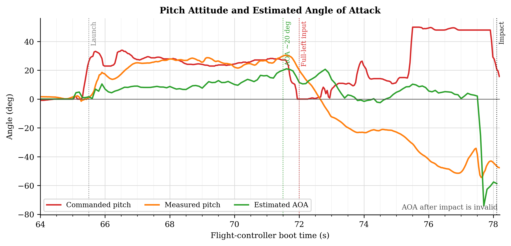
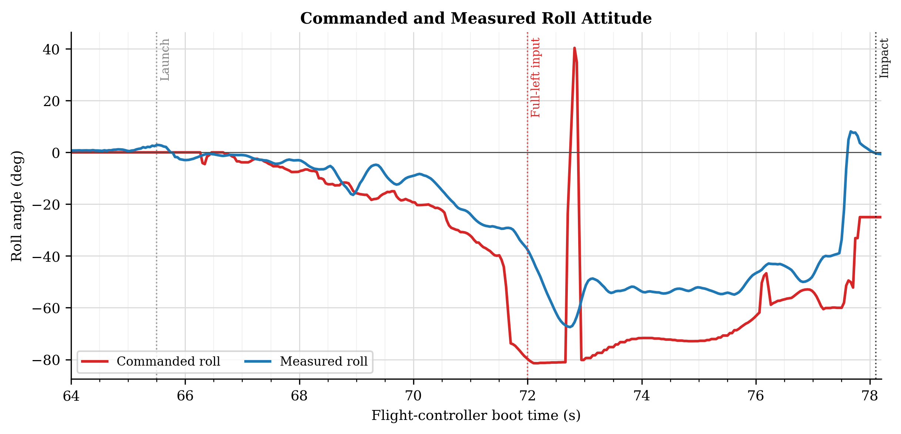
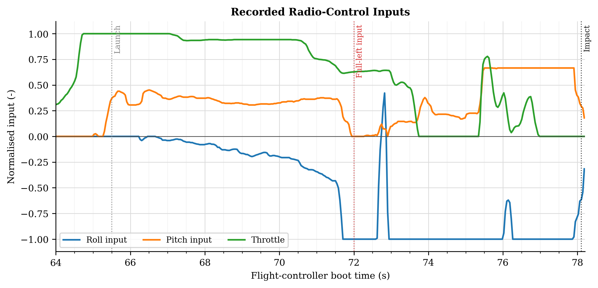
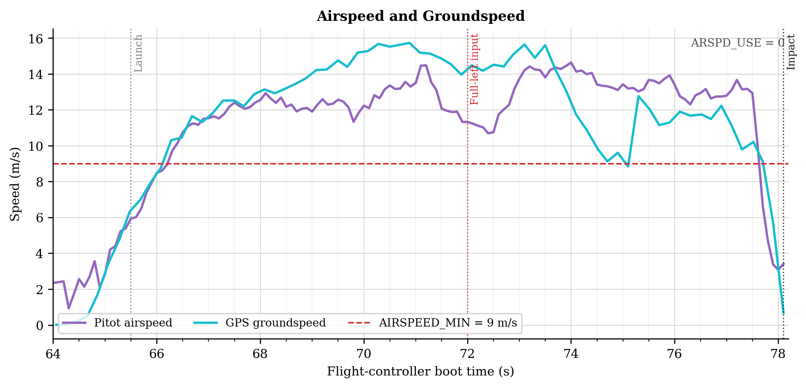
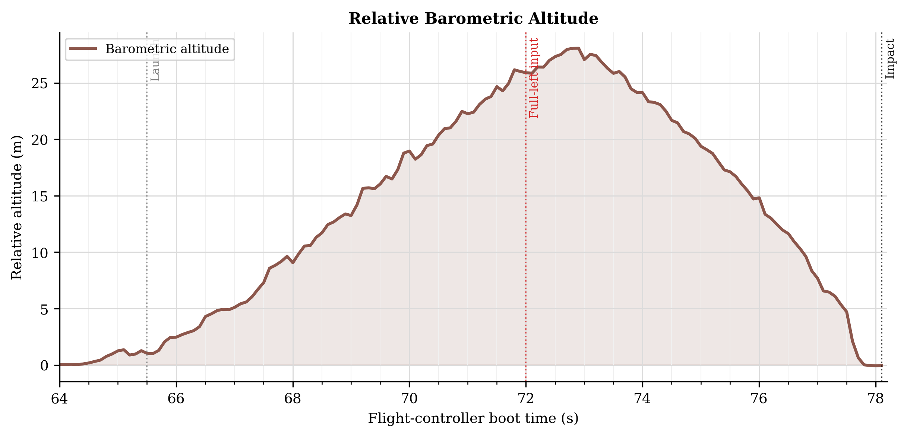
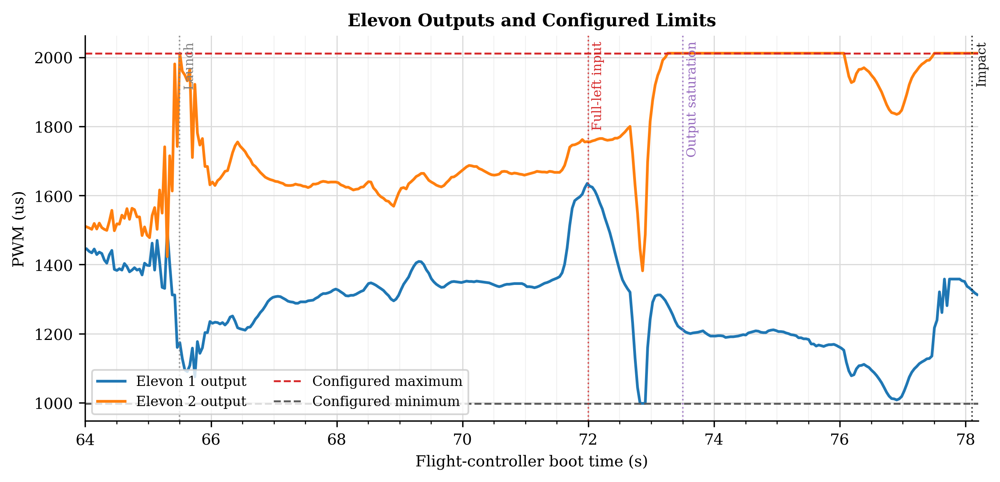

Pitch-up
The recorded pitch input commanded an aggressive initial climb.
Fixed-wing UAV investigation · ArduPilot
A data-led investigation of a prototype UAV loss-of-control event—separating recorded evidence from the first assumption of a control-surface failure.

01 / THE QUESTION
The aircraft climbed, rolled sharply left and entered a steep descent. Visual replay suggested a control-surface issue, but the dataflash log offered a more reliable route to the initiating cause.
I aligned commanded and measured attitude, received RC inputs, estimated angle of attack, speed, altitude and elevon outputs over the same 64.0–78.2 s interval.
02 / EVENT SEQUENCE
The channels were read together rather than in isolation. That changed the interpretation from an unexplained roll to an aggressive, recorded command sequence followed by loss of recoverable control authority.
The recorded pitch input commanded an aggressive initial climb.
Pitch approached 30° while estimated AOA reached approximately 20°.
The RC roll channel reached its lower limit and commanded about −80° roll.
Combined roll and pitch demand drove one elevon output to its limit.
The aircraft exhausted its available height before recovery was completed.
03 / ENGINEERING EVIDENCE
Every plot shares the same time window. Vertical markers identify launch, full-left RC input and impact; plot-specific markers show the high-AOA condition and output saturation.





04 / EVIDENCE BOUNDARY
A useful incident report must separate measured evidence from plausible explanations. Servo commands are recorded; physical surface position is not.
05 / CONFIGURATION
FBWA converts stick position into an attitude demand bounded by the configured limits. The recorded values allowed commands far beyond conservative first-flight settings.
| Parameter | Recorded | Reference shown |
|---|---|---|
| ROLL_LIMIT_DEG | 85° | 45° |
| PTCH_LIM_MAX_DEG | 60° | 20° |
| PTCH_LIM_MIN_DEG | −60° | −25° |
| STALL_PREVENTION | 1 | Enabled |
| ARSPD_USE | 0 | Not selected |
ENGINEERING VERDICT
The most probable causal chain was aggressive pitch-up, rising AOA, progressive full-left roll demand, elevon saturation and insufficient height for recovery. A mechanical control-surface problem remains possible, but is not demonstrated by this log.
06 / NEXT FLIGHT
The investigation converted an initial assumption into a testable set of corrective actions.